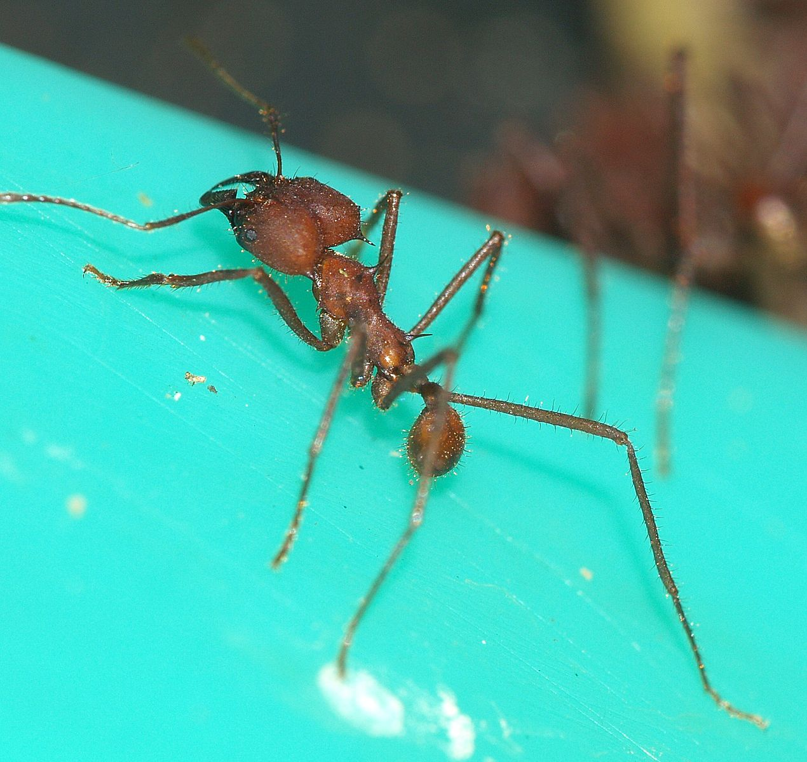

Atta cephalotes

Листорезы это одна из доминирующих и наиболее высокоорганизованных групп муравьев в тропической Америке, и, наряду с крупными колониями наших рыжих лесных муравьёв, могут считаться вершиной муравьиной эволюции.
Мы часто видим этих муравьев в фильмах - они цепочкой несут кусочки зеленых листьев. Именно за эту их особенность их и называют "муравьи-листорезы". Но зачем им листья? Ведь муравьи не едят листья! Эти муравьи срезают листья чтобы удобрять ими «грибные сады», которые они выращивают глубоко-глубоко в камерах своего огромного муравейника. Принесенные листья пережевываются до пастообразного состояния и на эту пасту высаживают мицелий специального гриба. Вот этими-то грибами они и питаются. Причем такой гриб больше нигде в природе не встречается - только в гнездах этих муравьев. Молодые матки навсегда покидающие муравейник, для основания нового, прихватывают с собой самое ценное - малюсенький кусочек этого гриба. Для мицелий гриба используют листья исключительно растений розоцветных и цитрусовых. Личный опыт киперов показывает, что весьма любят использовать для корма грибов плоды цитрусовых, очищенных от кожуры.
Эти муравьи строят самые крупные в мире муравейники, диаметром до 10 метров и глубиной до 6 метров, включающие около 2000 камер объемом до 20м³. За всю жизнь одна крупная колония выкапывает около 40 тонн почвы. Плюс к этому эти муравьи живут самыми большими семьями - зрелые колонии состоят из 5-8 миллионов рабочих муравьев (!). У муравейников практически нет врагов и они живут пока жива матка - 10-20 лет.
Лет происходит в конце октября и продолжается до середины декабря.
В большинстве стран Европы этот муравей находится под угрозой исчезновения
Другие названия: головастый муравей-листорез
Особенности: полиморфизм, поликалия
Кaсты: рабочие, солдаты, фуражиры, носильщики
Размеры: рабочие: 5—18 мм, матка: 30 мм
Количество королев: моногиния
Размер кoлонии: >2M
Тип муравейника: холмики
Типичное местообитание: влажные тропические леса Южной Америки
Зимовка: не обязательна
Питание: всеяден, разводят грибные сады, необходимы листья
Влажность: повышенная ≈ 98%
Температура: обычная ≈ 28—29°С
Сложность содержания: средне
Подвижность: средняя
Подпишись
у нас уже 5 человек